Nach dem Besuch im Rathaus fand in Pastor´s Garten ein großer Grillabend statt, zu dem die Pfarrei St. Josef auch die Gäste und Gasteltern unserer Nachbargemeinde St. Januarius eingeladen hatte.
Nachdem sich alle reichlich gestärkt hatten, fand in der von unseren Pfadfindern aufgebauten Jurte ein internationaler Abend mit den Gästen aus Italien und der Dominikanischen Republik statt. Gespräche und vor allem auch Gesänge aller Beteiligten belebten dieses abwechslungsreiche und äußerst kommunikative Zusammentreffen.

Unsere Pfadfinder studieren zunächst noch die Sonderzeitung zum WJT
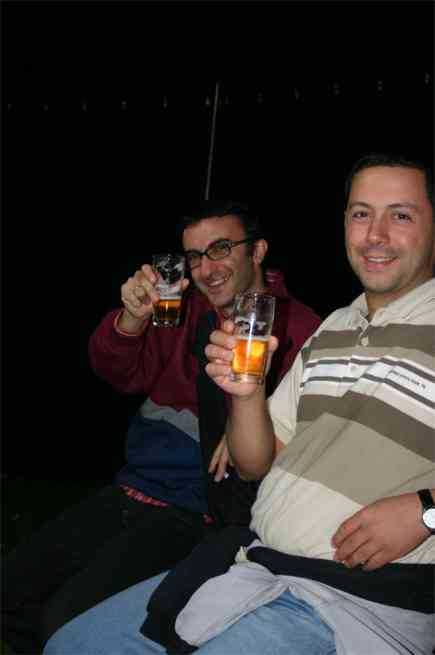
Die Gäste Francesco und Pompeo „prosten“ uns zu.

Diskussion am Bufett mit Fabricio

Don Salvatore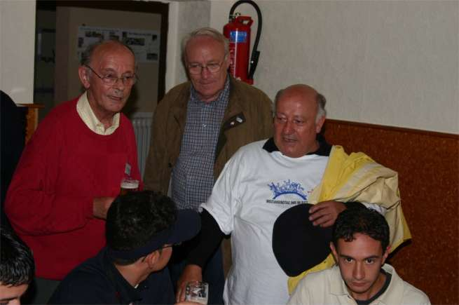
Der Organisator Herr Susemichel, der PGR-Vors. Herr Berretz und Don Cataldo von der italienischen Mission im Gespräch mit Gästen
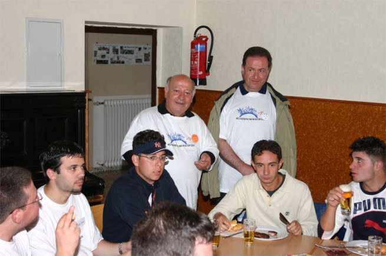
Don Cataldo und Don Dario im Gespäch mit den Gästen Francesco, Gianluca, Davide und Marco

Blick in den voll besetzten Pfarrsaal
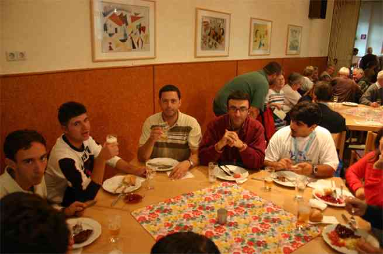
Unsere italienischen Gäste Marco, Francesco, Pompeo, Fabrizio und Debora
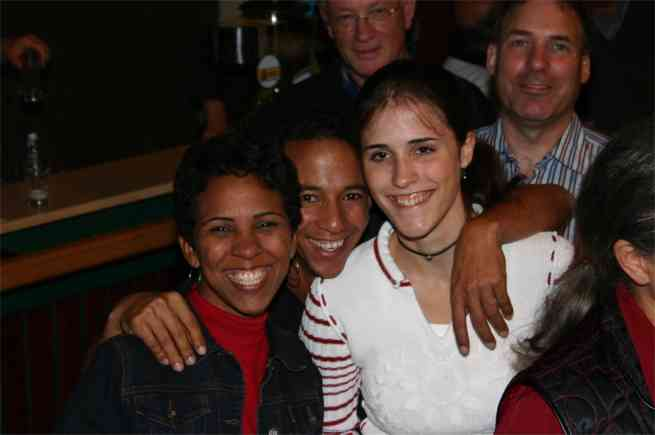
Gäste aus der Dominikanischen Republik

Gedränge vor dem Bierstand…

…und am Bufett

Don Cataldo und Don Dario
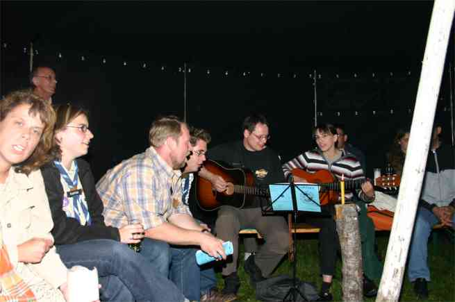
Gesang in der Jurte

Debora führt die Polonaise an…

und das offene Feuer in der Jurte heizt die Stimmung an.
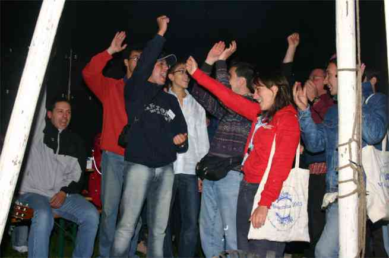
Freude unter Freunden
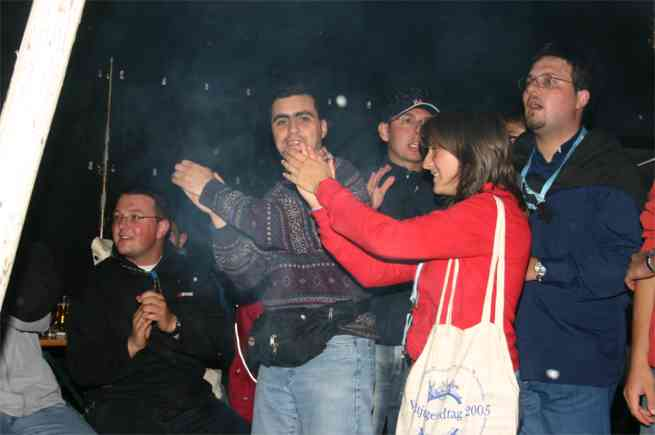
Italienische Gesangsvorführung…

…und die Lieder der Gäste aus der Dominikanischen Republik
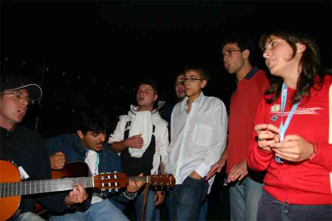
Noch einmal italienischer Gesang mit Fabrizio, Marco, Don Salvatore, Marco, NN und Debora
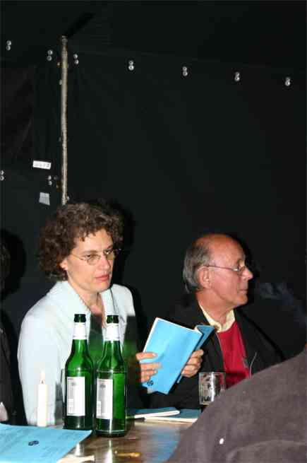
Zwischenzeitlich ein goßes Lob und herzlichen Dank für ihren Einsatz an unsere örtlichen Organisatoren Frau Kreul und Herrn Susemichel

Stefan Ecke „füttert“ das Feuer in der Jurte.
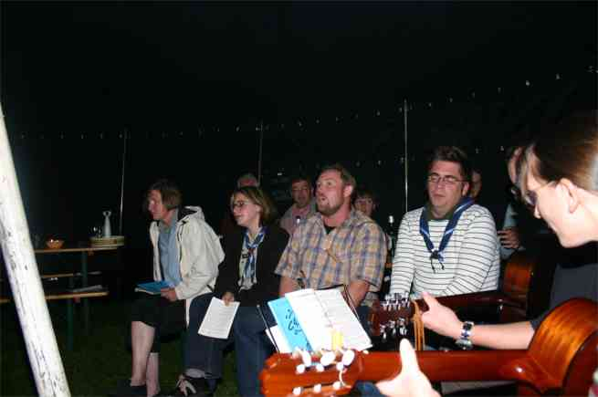
Auch unser Kreis für junge Musik trägt zur Stimmung kräftig bei.

Stimmung in der Jurte mit Davide, Marco, Francesco und Pompeo

Lied für Debora mit Don Salvatore

Herr Susemichel und Debora
Danken darf ich an dieser Stelle auch allen anderen, hier nicht geannten tatkräftigen Helferinnen und Helfern, die zum Gelingen dieses großartigen Abends beigetragen haben.
Alle Fotos P. Berretz
Be050813

{kind=link}